Items & Weapons of Hallownest
Relics, Tools & Instruments of the Void
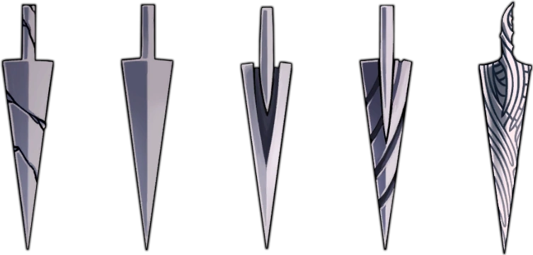
The Knight's primary instrument of war — a slender, ancient nail forged from the metals of Hallownest. Beginning as a Old Nail, it can be upgraded through the master craftsman Nailsmith four times until it reaches its ultimate form: the Pure Nail, said to be the sharpest blade ever forged in the kingdom. Each upgrade demands geo and the rare ore known as Pale Ore.
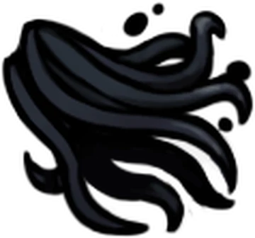
An upgrade to the Mothwing Cloak, granted by the Void itself in the Abyss. The Knight is briefly cloaked in shadow, becoming invincible during the dash. It can phase through enemies, beams, and hazards entirely — a manifestation of pure Void that sets the Knight apart from any other vessel.
A powerful downward slash taught by the Nailmaster Sheo. Deals 2.5× nail damage in a wide arc. One of the highest damage Nail Arts, ideal for crowd control.
A horizontal lunge strike taught by Nailmaster Oro. After dashing, the Knight delivers a long-range forward slash covering great distance. Costs a small amount of Geo to learn.

A spinning multi-hit technique taught by Nailmaster Mato. Hits up to 6 times, dealing total damage far exceeding other arts. Exceptional for large or stationary targets.
The first spell obtained, found in Forgotten Crossroads. Projects a spirit forward that damages all enemies in its path. Upgrades to Shade Soul in the City of Tears.
A downward plunging spell that cracks the ground, damaging nearby enemies. Found in the Soul Sanctum. Upgrades to Descending Dark — a far more devastating version.
An upward burst of howling spirits found in Fog Canyon. Releases a column of wraiths above the Knight. Upgrades to Abyss Shriek, one of the most powerful spells in the game.
A claw salvaged from the Mantis Tribe, granting the ability to cling to walls and wall-jump. Found deep within the Mantis Village. One of the most transformative movement upgrades.
Ancient wings that grant a double jump. Hidden in the Ancient Basin. The wings are remnants of a long-dead monarch whose name has been lost to Hallownest's silence.
Mined from the Crystal Peak, this crystallised heart grants a super dash — propelling the Knight horizontally at tremendous speed until hitting a wall or ceiling. Essential for secret areas.
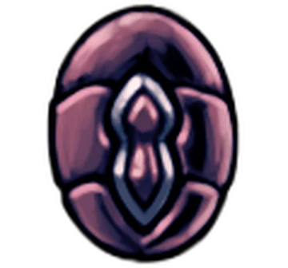
A seal bearing the crest of the City of Tears. Dropped by the Gorgeous Husk in Forgotten Crossroads. Inserts into a gate mechanism to open the passage into the city proper.
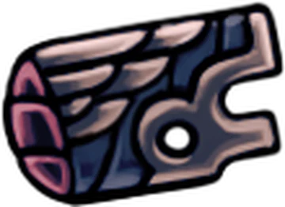
A rusted pass that activates Hallownest's ancient tram system, connecting the Forgotten Crossroads, Deepnest, and the Ancient Basin. Found in the Failed Tramway.

Fragments of ancient masks scattered throughout Hallownest. Every four shards combine to create one complete Mask, permanently increasing the Knight's maximum health by one.
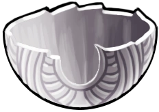
Shards of Soul Vessels, the containers used by Hallownest to store Soul. Three fragments complete one vessel, permanently increasing the Knight's maximum Soul capacity.
A rare ore suffused with the power of the Pale King. The Nailsmith requires it for the highest tiers of nail upgrades. Only 6 pieces exist in all of Hallownest.
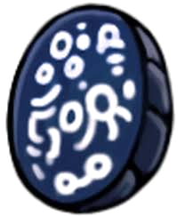
The journal of a traveller who explored Hallownest long before the infection spread. Sold to Relic Seeker Lemm for 200 Geo each. A record of observations from a lost age.
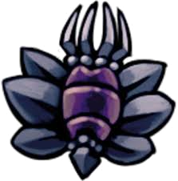
Official seals bearing the insignia of Hallownest. Once used to authenticate royal decrees. Now treasured as historical artefacts. Fetches 450 Geo from Lemm.
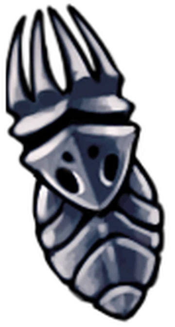
A small idol carved in the likeness of the Pale King. Erected throughout Hallownest as a symbol of devotion. Each idol is worth 800 Geo to Lemm — the most valuable common relic.
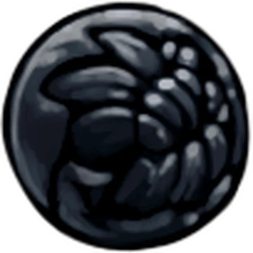
An egg of unknown origin from an Ancient Civilisation that predates Hallownest entirely. Its interior is etched with indecipherable script. Worth 1200 Geo — the rarest relic in the kingdom.
By concentrating gathered Soul, the Knight can Focus — a brief channelling that restores one Mask of health. The core survival mechanic of Hallownest. Requires 33 Soul.
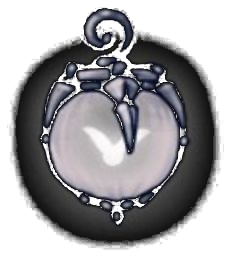
A lantern containing a Lumafly, a glowing creature native to Hallownest. Illuminates the pitch-black passages of Deepnest and certain cave systems. Purchased from Sly for 1800 Geo.
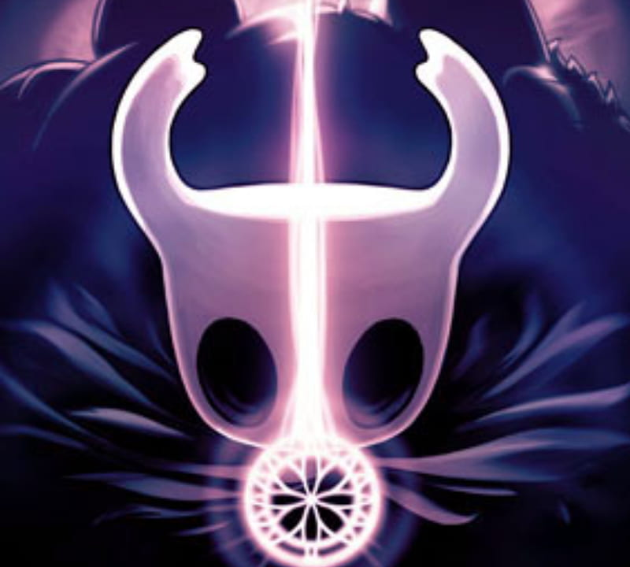
A sacred nail of pure dream essence, granted by the Moth's Seer. Can be swung to read the thoughts of any being — living, dead, or inanimate. Also used to enter bosses' memories and collect Essence.

The currency of Hallownest — small shards of crystallised shell dropped by enemies. Used to purchase items, charms, and upgrades from vendors across the kingdom. Lost on death, but recoverable from your Shade.